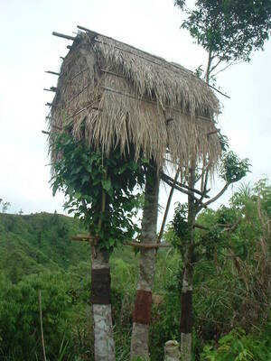

lelapeng 
/lɔlapɔŋ/
Var. lelappeng
n.
“storage_house”
n.
a hidden house or field far from one's usual home or a rice storage shed
Iyan seini ka tahuanan te egkahaani ne iling te paley, aheley wey te duma pad ne mananey egkamewu. Sabeka seini baley ne iyan tahù ka me egkakeen para te pegpangandam ke due egginguma ne bitil wey sabeka degma seini ne tahuanan te paley, aheley ne para egbenien.
Keilangan ne egkapenu ku, ka lelapeng ku te seini ne leg-un su duen kun bitil ne egginguma te seup ne leg-un.
I must to be fully my storage house in this year because it was said that there will be a famine come in the next year.
Wrd.Gloss: storage_house
Eng. house; storage shed; shed; rice store
Online dict status: -
Usage level: M
Updated by: RJH,JLM,AAA
Last updated: 13/Oct/2009
This page last updated: 19/May/2012
Copyright © 2009-2010, Matigsalug Language Christian Association, Inc